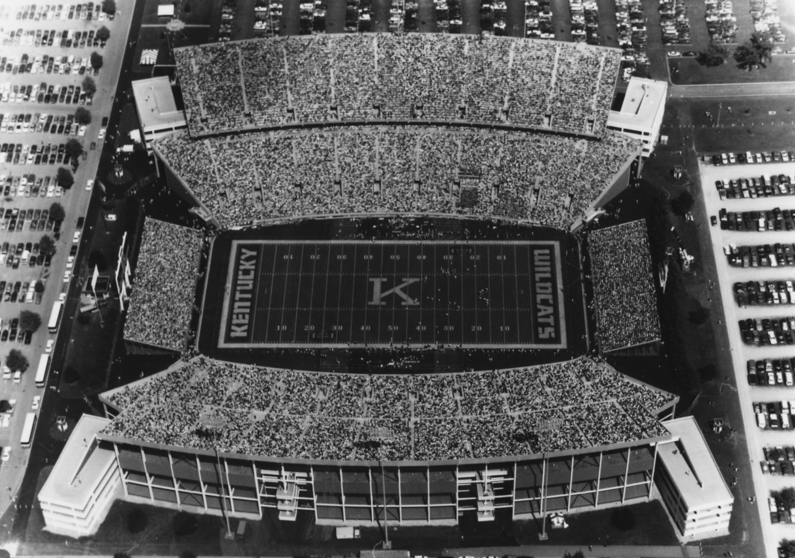
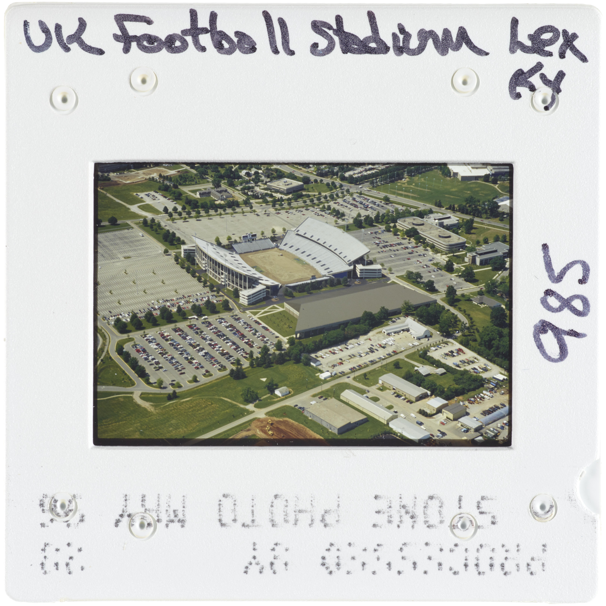

Cesium Ion Kroger Field Tour
The area of interest for this project is Kroger Field, formerly Commonwealth Stadium. The area of Kroger Field on campus is of significant insterest to me as I am a regualr attendent of UK Football games since 2012. I am also interested in the history of Kentucky football and of the construction of Commonwealth Stadium from my major in Civil Engineering.
The goal of this project is to show LiDAR visulaization of Kroger Field as well as historical photographs of the stadium. This project includes a Cesium slideshow creating using LiDAR visualization and historical photographs from the UK library's archive.
Visualizations created from lidar data provided by KyFromAbove in ArcGIS Pro and Blender. Additional sources of information from UK Athletics, ExploreUK April, 2023,
Page and visualizations created by CSWALLiN for GEO 409, Department of Geography, University of Kentucky. Spring 2023.
Kroger Field under construction, date unknown
Kroger Field during a game
Kroger Field with Nutter Field House, parts of south campus can be seen in the upper right corner of this image